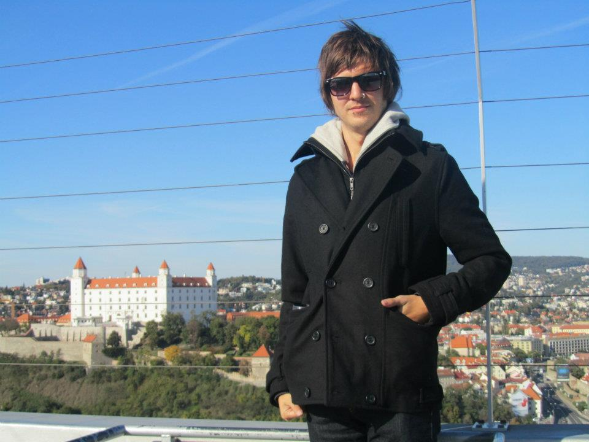
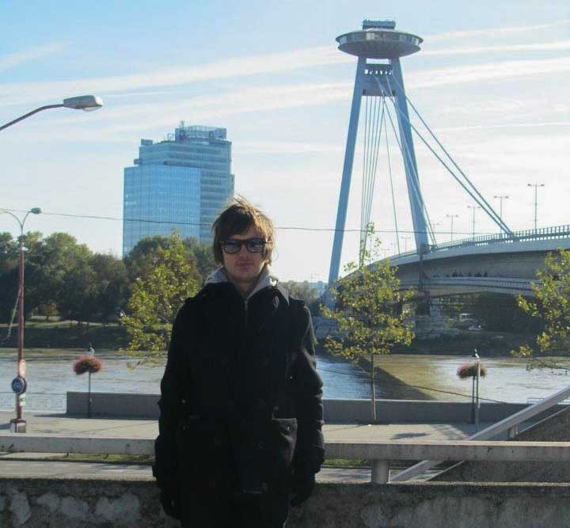
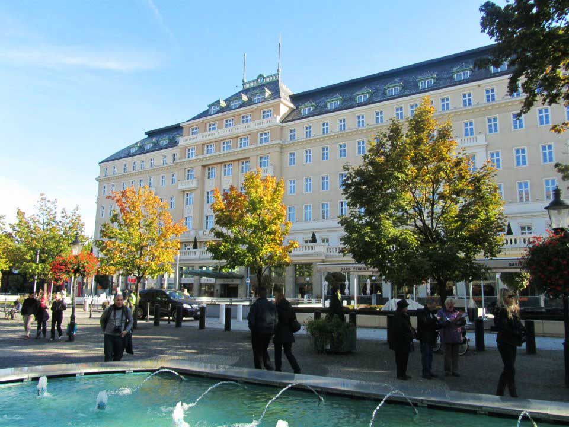
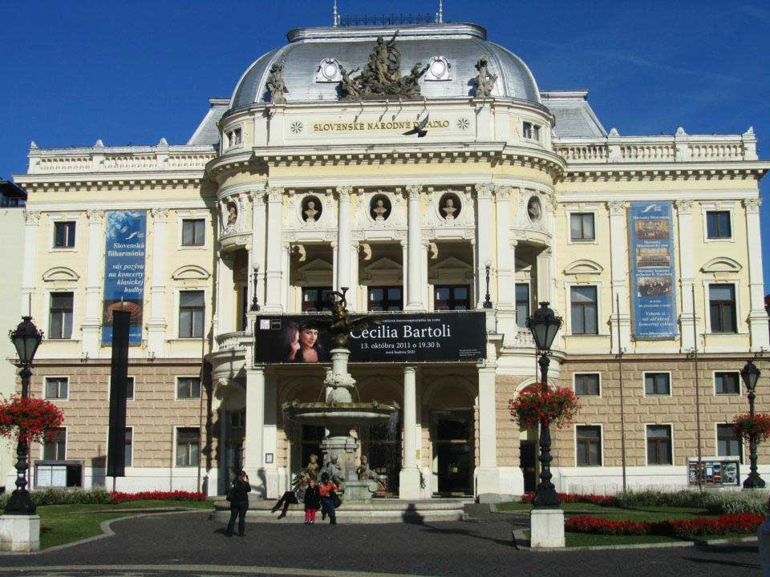
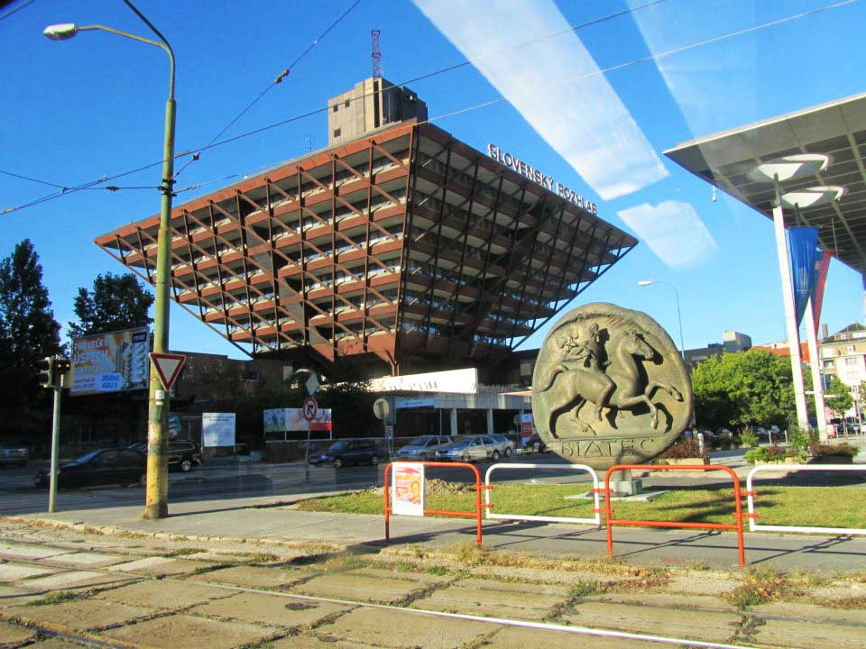
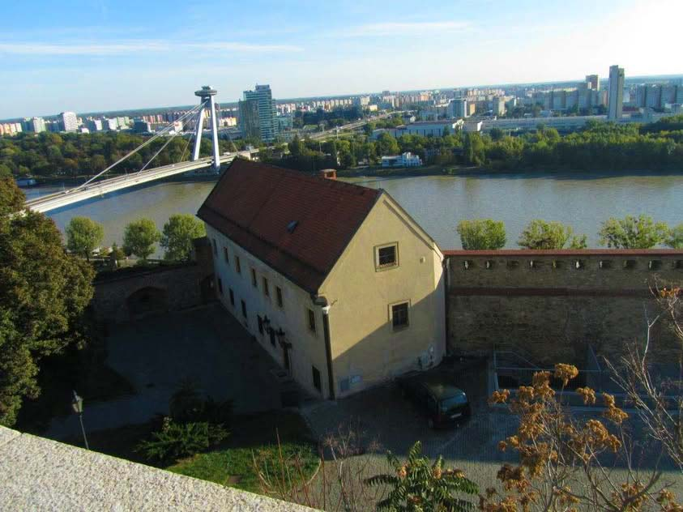

Journey Through Bratislava: Your Comprehensive Travel Guide
Introduction
Bratislava, the capital of Slovakia, is a charming city where medieval architecture meets modern vibrancy. Nestled along the banks of the Danube River, Bratislava boasts a rich cultural heritage, picturesque old town, and a dynamic nightlife. Whether you're interested in history, architecture, or simply enjoying scenic river views, Bratislava offers an unforgettable European experience.
History
Founded in the 9th century, Bratislava has served as a significant cultural and political center in Central Europe. Throughout its history, the city has been influenced by various empires, including the Austro-Hungarian Empire, which has left a lasting impact on its architectural landscape. Bratislava was also the coronation city for Hungarian kings, further enriching its historical significance. Today, the city's blend of old and new reflects its diverse and dynamic past.
How to Get There
Bratislava is well-connected to various parts of Europe, making it an accessible destination for travelers. Here are the primary ways to reach Bratislava:
- By Air: The nearest major airport is Bratislava Airport (BTS), located approximately 10 kilometers from the city center. From the airport, you can take a bus, taxi, or shuttle service to reach your accommodation.
- By Train: Bratislava is a central hub in Europe's extensive rail network. Direct trains connect Bratislava to major cities like Vienna, Budapest, and Prague. The main railway station is Bratislava hlavná stanica (Bratislava Main Station).
- By Bus: Long-distance buses operated by companies like FlixBus and RegioJet offer affordable travel options to Bratislava from various European cities, including Vienna, Budapest, and Munich.
- By Car: Renting a car provides flexibility, allowing you to explore Bratislava and its surrounding regions at your own pace. The city is accessible via major highways from cities like Vienna and Budapest.
- By Ferry: While less common, ferries connect Bratislava to nearby cities along the Danube River, primarily for leisure cruises rather than direct transportation.
Top Attractions in Bratislava
1. Bratislava Castle
Perched atop a hill overlooking the Danube River, Bratislava Castle is the city's most iconic landmark. The castle complex includes museums, galleries, and beautifully maintained gardens. Visitors can explore the historic rooms, enjoy panoramic views of the city, and learn about Slovakia's history through various exhibitions.

2. UFO Observation Deck
The UFO Observation Deck is a modern architectural marvel situated atop the SNP Bridge. Shaped like a UFO, this structure offers stunning 360-degree views of Bratislava and the surrounding landscapes. It also houses a restaurant where visitors can enjoy a meal with a view.
3. Old Town (Staré Mesto)
Bratislava's Old Town is a labyrinth of narrow streets, historic buildings, and charming squares. Highlights include St. Martin's Cathedral, the Old Town Hall, and numerous cafes and restaurants. It's the perfect place to stroll, shop for souvenirs, and soak in the city's vibrant atmosphere.
4. Devin Castle
Located just outside Bratislava, Devin Castle is a stunning ruin perched atop a cliff overlooking the confluence of the Danube and Morava rivers. The castle offers a glimpse into medieval history, with its impressive fortifications and scenic surroundings, making it a favorite spot for hiking and photography.
5. Slovan Towers (Slovanské veže)
The Slovan Towers, with their distinctive upside-down triangle design, are a striking example of modern architecture in Bratislava. These towers house residential apartments and office spaces and are known for their unique geometric shapes that add a contemporary flair to the city's skyline.
6. Primatial Palace
The Primatial Palace is a magnificent Baroque building in Bratislava's Old Town. It serves as the office of the Prime Minister of Slovakia and features an impressive Hall of Mirrors and a beautiful courtyard. The palace is surrounded by charming streets and historical sites, making it a must-visit attraction.
Tips and Recommendations
Do’s and Don’ts
- Do: Wear comfortable walking shoes, as Bratislava involves a lot of walking on cobblestone streets.
- Don’t: Miss the opportunity to explore Bratislava’s lesser-known neighborhoods like Bratislava-Petržalka for a more authentic experience.
- Do: Bring a map or use a reliable navigation app to help you navigate the city's maze-like streets.
- Don’t: Leave your belongings unattended, especially in crowded areas like Old Town Square and public transportation.
- Do: Take advantage of Bratislava’s excellent public transportation system, including buses, trams, and the metro, to get around efficiently.
- Don’t: Engage in loud or disruptive behavior in public places, respecting the local customs and tranquility.
Packing List
- Comfortable walking shoes.
- Weather-appropriate clothing (layers for spring/fall, warm clothes for winter).
- Reusable water bottle to stay hydrated while exploring.
- A backpack for carrying snacks and essentials.
- A map or guidebook to navigate Bratislava’s historic attractions.
- Insect repellent and personal hygiene items.
- Portable charger for your electronic devices.
- Light jacket or sweater for cooler evenings.
- Umbrella or raincoat for unexpected weather changes.
- Basic Slovak phrases to enhance your interactions with locals.
Costs
- Entry Fees: Most major attractions and museums charge an entrance fee (e.g., €10 for Bratislava Castle).
- Transportation: A 24-hour public transport ticket costs around €4 and covers buses, trams, and the metro.
- Food: Meals at local restaurants range from €10-25 per person, depending on the establishment.
- Accommodation: Prices vary widely based on location and quality, from budget hostels at €15 per night to luxury hotels exceeding €100 per night.
Currency and Money Matters
The official currency in Bratislava, as in the rest of Slovakia, is the Euro (€). Here's what you need to know about managing your finances during your trip:
Currency Exchange
Currency exchange services are widely available in Bratislava, including at the airport, banks, and authorized exchange counters. It's advisable to exchange a small amount of money upon arrival for immediate expenses.
ATMs and Banking
ATMs are readily accessible throughout the city, especially in major districts and tourist areas. Most ATMs accept international debit and credit cards. However, it's a good practice to inform your bank of your travel plans to avoid any issues with card usage abroad.
Credit Cards
Credit cards (Visa and Mastercard) are widely accepted in hotels, restaurants, and larger shops. However, smaller establishments and street vendors may prefer cash, so it's recommended to carry some euros for such situations.
Tips
Tipping in Bratislava is appreciated but not mandatory. A tip of 5-10% is common for good service in restaurants, while rounding up the bill is sufficient for cafes and casual dining.
Practical Information
Best Time to Visit
The optimal times to visit Bratislava are during the spring (April to June) and fall (September to October). During these periods, the weather is mild, and the tourist crowds are more manageable compared to the peak summer months. Springtime brings blooming flowers and pleasant temperatures, while autumn offers crisp air and colorful foliage.
Getting There
Bratislava is well-connected by air, rail, and road:
- By Air: The nearest major airport is Bratislava Airport (BTS), located approximately 10 kilometers from the city center. From the airport, you can take a bus, taxi, or shuttle service to reach your accommodation.
- By Train: Bratislava is a central hub in Europe's extensive rail network. Direct trains connect Bratislava to major cities like Vienna, Budapest, and Prague. The main railway station is Bratislava hlavná stanica (Bratislava Main Station).
- By Car: Renting a car provides flexibility, allowing you to explore Bratislava and its surrounding regions at your own pace. The city is accessible via major highways from cities like Vienna and Budapest.
- By Bus: Long-distance buses operated by companies like FlixBus and RegioJet offer affordable travel options to Bratislava from various European cities, including Vienna, Budapest, and Munich.
- By Ferry: While less common, ferries connect Bratislava to nearby cities along the Danube River, primarily for leisure cruises rather than direct transportation.
Language
The official language is Slovak. While English is commonly spoken in tourist areas, learning a few basic Slovak phrases can enhance your interactions with locals and enrich your travel experience.
Health and Safety
Bratislava is generally safe for travelers, but it's important to take standard precautions:
- Stay hydrated and protect yourself from the sun, especially during summer months.
- Be cautious with your belongings, particularly in crowded areas and on public transport.
- Use reputable tour operators and guides for activities and excursions.
- Ensure you have appropriate travel insurance covering health and activities.
Cultural Immersion
Immerse yourself in Bratislava’s rich culture through various local traditions and activities:
- Palace Tours: Explore the grandeur of Bratislava’s numerous palaces and historical buildings, each with its unique architectural style and historical significance.
- Local Markets: Visit markets like the Bratislava Market and Slovak Market to experience the local cuisine, crafts, and vibrant community life.
- Art and Music: Attend performances at local theaters and concert halls, or visit art galleries showcasing regional artists.
- Festivals: Participate in events such as the Bratislava Music Festival or the Christmas Markets to experience local festivities and cultural celebrations.
- Historical Workshops: Engage in workshops that delve into Bratislava’s history, architecture, and cultural heritage, offering a deeper understanding of the city's legacy.
- Boat Tours: Take a boat tour along the Danube River to enjoy scenic views of Bratislava’s landscapes and maritime beauty.
Food and Cuisine
Bratislava offers a delightful mix of traditional Slovak cuisine and modern culinary innovations. Here are some must-try dishes and dining experiences:
- Bryndzové Halušky: Traditional Slovak dumplings made from potato dough, served with sheep cheese and topped with bacon.
- Kapustnica: A hearty cabbage soup often served during festive occasions, made with sauerkraut, smoked meat, and spices.
- Guláš: A rich stew made with beef, onions, and paprika, typically served with bread dumplings.
- Lokše: Thin potato pancakes that can be served sweet with jam or savory with meat and cheese.
- Trdelník: A sweet pastry rolled in sugar and nuts, perfect for a delightful snack while exploring the city.
- Pivo (Beer): Enjoy Slovak beer at one of Bratislava’s many traditional pubs and modern craft breweries.
- Local Wines: Savor a variety of Slovak wines, including those from the Small Carpathians region, available at numerous wine bars and restaurants.
- Traditional Pubs (Hospoda): Experience authentic Slovak hospitality and cuisine at traditional pubs, where you can enjoy live music and local dishes.
- Fine Dining: For a more upscale experience, visit Bratislava’s gourmet restaurants offering innovative dishes and exquisite wines.
- Street Food: Taste authentic Slovak street food like langoš (fried dough) and klobása (sausages) from local vendors.
I highly recommend dining at local restaurants and cafes to savor authentic Bratislava flavors and enjoy the city's lively atmosphere.
Adventure and Activities
Bratislava offers a wide range of activities for adventure enthusiasts and nature lovers:
- Boat Tours: Explore the scenic waterways of the Danube River on a guided boat tour, offering unique perspectives of Bratislava’s landscapes and maritime beauty.
- Hiking and Biking: Discover Bratislava’s natural beauty through its extensive network of hiking and biking trails in areas like Bratislava Forest Park and Sad Janka Kráľa.
- Segway Tours: Navigate the city’s landmarks and parks effortlessly on a guided Segway tour, providing a fun and efficient way to explore Bratislava.
- Horseback Riding: Enjoy horseback riding excursions through Bratislava’s picturesque landscapes and forested areas, offering a tranquil escape from the urban bustle.
- Kayaking and Canoeing: Paddle along Bratislava’s waterways, exploring hidden coves and enjoying the tranquility of the river.
- Photography Tours: Capture stunning photographs of Bratislava’s architecture, gardens, and natural scenery on a specialized photography tour, perfect for both amateur and professional photographers.
- Escape Rooms: Challenge yourself with interactive escape room experiences that test your problem-solving skills and provide a fun group activity.
- Live Music and Theatre: Attend live performances at local venues, ranging from classical concerts at the Slovak National Theatre to contemporary theatre productions at the East Side Gallery.
- Cooking Classes: Participate in Slovak cooking classes to learn how to prepare traditional dishes, offering a hands-on cultural experience.
- Historical Walks: Join guided historical walks to explore Bratislava’s rich heritage, including tours of the Old Town and Bratislava Castle.
One of the most exhilarating activities is taking a twilight boat tour on the Danube River, offering breathtaking views of Bratislava’s illuminated landmarks and a magical perspective of the city’s beauty.
About Bratislava
Bratislava, the capital city of Slovakia, is renowned for its historical significance, architectural grandeur, and vibrant cultural scene. Situated along the banks of the Danube River, Bratislava serves as the political, economic, and cultural heart of Slovakia, blending ancient heritage with modern dynamism.
The city is famously home to Bratislava Castle, a symbol of Slovak history and culture, and the Old Town (Staré Mesto), a UNESCO World Heritage Site. Bratislava’s extensive history spans over a thousand years, reflecting influences from various civilizations, including the Celts, Romans, and the Austro-Hungarian Empire.
Bratislava boasts a bustling metropolis with diverse neighborhoods like Petržalka, known for its modern architecture, and Ružinov, which offers a mix of residential areas and commercial centers. The city’s blend of old and new is evident in its architecture, which ranges from medieval churches and palaces to contemporary buildings and vibrant street art.
Additionally, Bratislava serves as a gateway to the Slovak countryside and the stunning Little Carpathians, providing travelers with opportunities for day trips, outdoor activities, and countryside excursions. The city's Mediterranean-like climate ensures pleasant weather for most of the year, making it an attractive destination for tourists seeking both historical exploration and modern leisure.
With its combination of ancient history, vibrant culture, and modern amenities, Bratislava is an ideal destination for travelers seeking a comprehensive and enriching experience. Whether you're exploring its iconic landmarks, enjoying its culinary delights, or immersing yourself in its lively atmosphere, Bratislava offers something for every visitor, ensuring an unforgettable journey through one of Europe’s most enchanting cities.